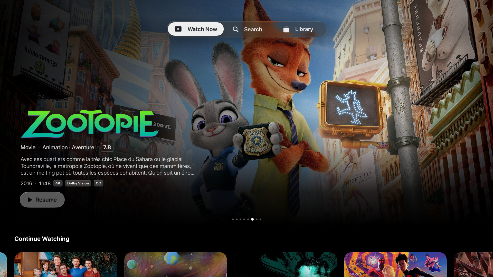
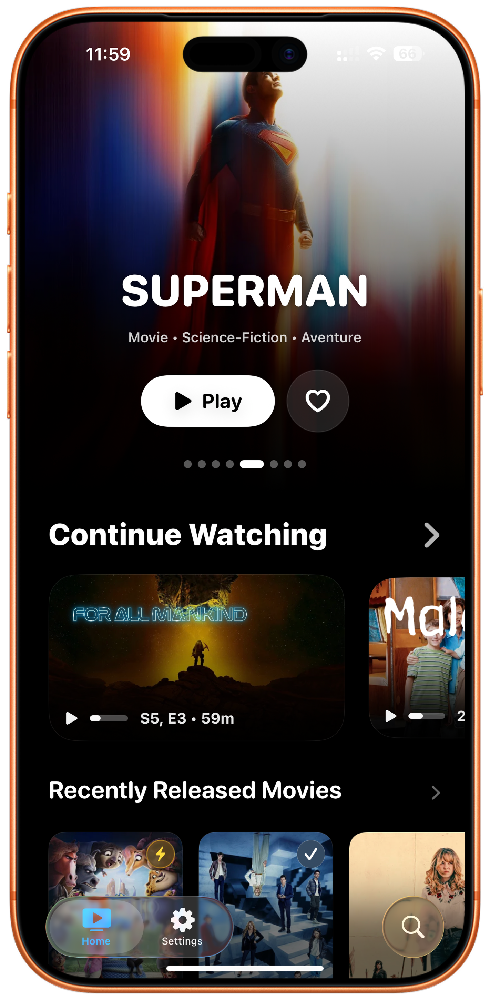
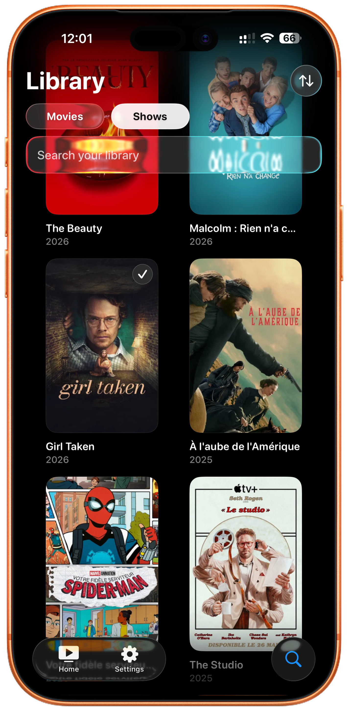
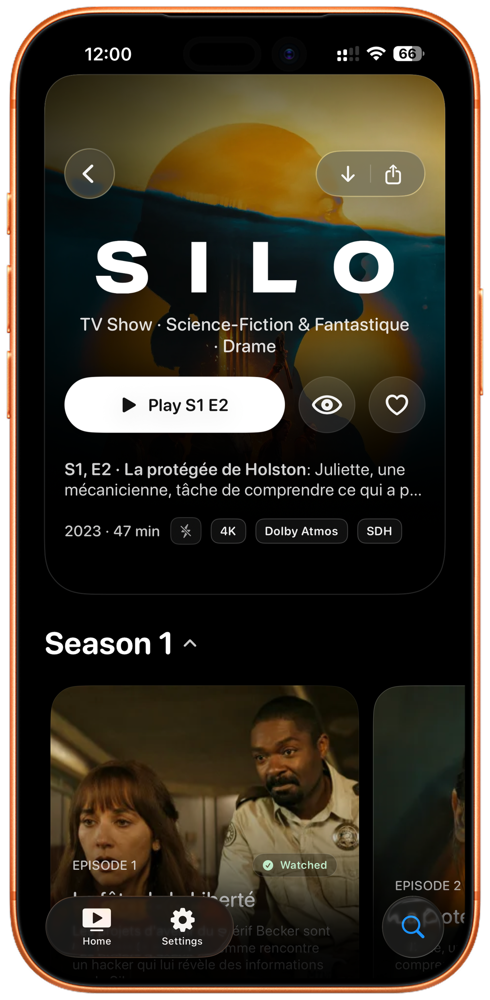

Feels at home on Apple devices
SwiftUI screens, system motion, clear typography, and layouts that respect the way iPhone and Apple TV are used.
ReelFin turns a self-hosted Jellyfin server into a fast, calm Apple experience. Browse your library, resume faster, and press play from an interface built for the devices you actually use.




ReelFin keeps the Apple-native feeling from launch to playback: clean navigation, large artwork, focused actions, and no streaming service clutter between you and your library.
SwiftUI screens, system motion, clear typography, and layouts that respect the way iPhone and Apple TV are used.
Continue watching, library browsing, search, and details stay close together so choosing something never feels like work.
Compatible files can play through Apple frameworks without forcing unnecessary server conversion.
ReelFin connects to the Jellyfin server you choose. Your library, server, and preferences remain the center of the experience.
ReelFin keeps the same visual identity across platforms, then adapts the interaction model to the screen in front of you.
Open the app, scan big artwork, resume the right item, and get back to watching without extra layers.
Switch between movies and shows, search quickly, and scan poster grids without leaving the native app flow.
Artwork, metadata, watch state, and the play action stay easy to scan when you land on a title.
Apple TV gets wider rows, strong focus targets, and a home screen that works from the couch.
The big-screen version is not a stretched phone interface. ReelFin gives the remote room to breathe, keeps focus obvious, and makes the next play action visible from across the room.
Large targets, visible state, and a navigation model built for lean-back control.
Hero images, rows, and details use the room instead of compressing the library.
Resume and watch actions stay prominent so the screen never feels like a settings panel.
ReelFin prefers the cleanest path available: use the original media when Apple devices can handle it, and let Jellyfin help only when a different route is needed.
ReelFin is a client for the Jellyfin server you configure. It does not turn your personal library into a tracking surface.
Your Jellyfin URL, session, and library metadata come from the server you choose.
Authentication tokens are stored in the Apple Keychain, with preferences kept locally.
ReelFin does not sell personal data or use your library for cross-app tracking.
ReelFin is early enough for feedback to matter. Try the TestFlight build, report rough edges, or follow the project as it moves toward a public App Store release.